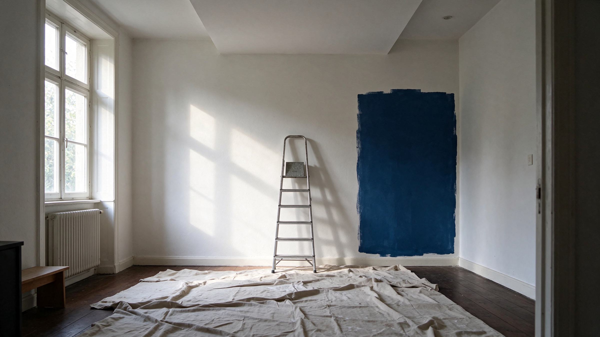
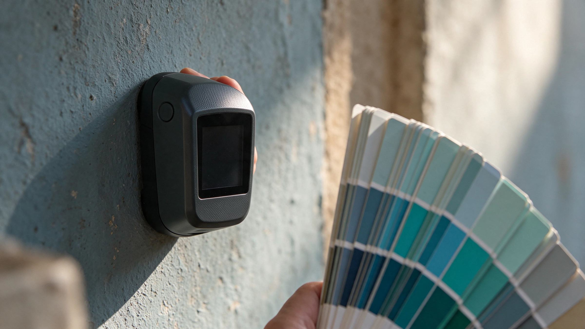
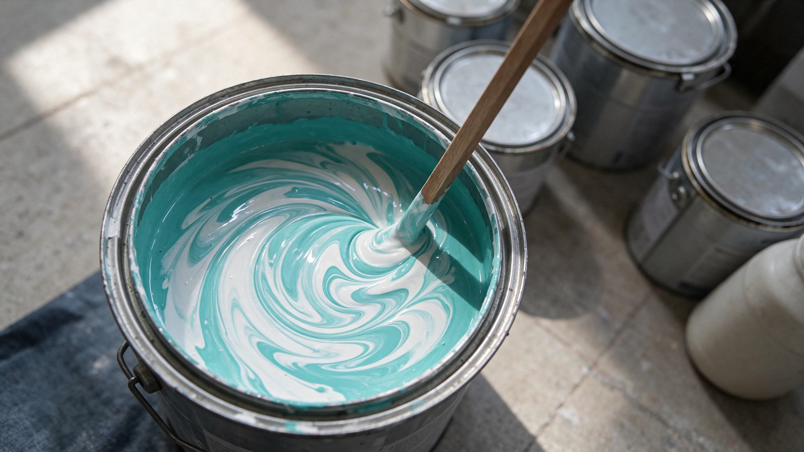
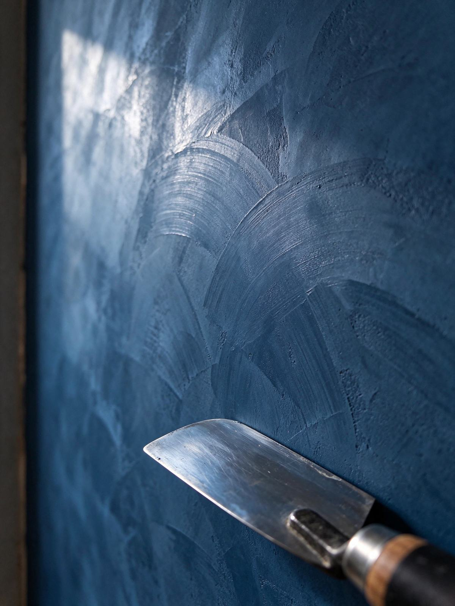
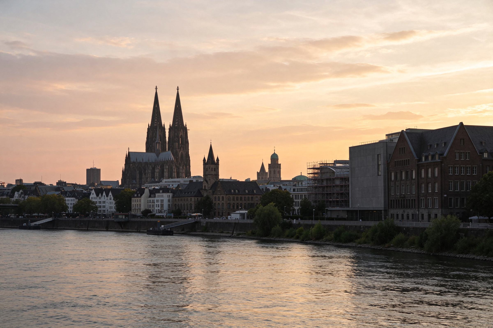
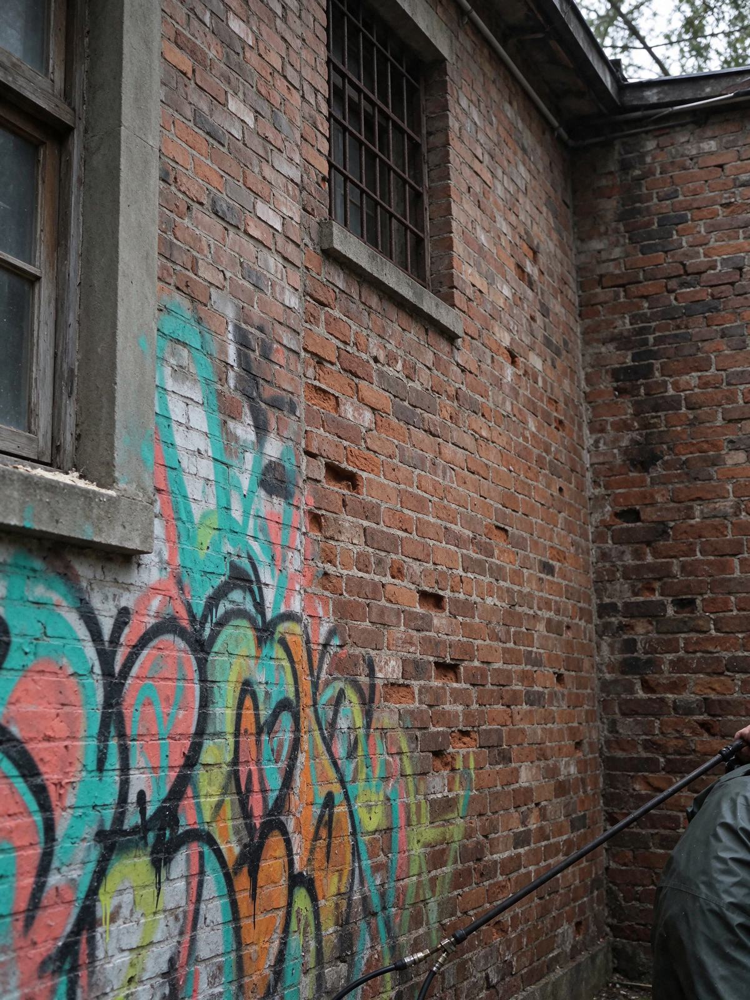

Wisch- und Spachteltechnik
Lasuren wie ein Schleier, Spachtelschläge, die sichtbar bleiben dürfen.
- Caparol Antik-Lasur
- Arte-Lasur
- Spachtelmassen


Malermeisterbetrieb für Köln und Umgebung. Seit 1996 aus Zollstock.
Was wir machenWelche Farbe darf es sein? Streichen Sie diese Seite.
1996

Mitglied der Handwerkskammer zu Köln und der Maler- und Lackierer-Innung Köln.
1996 hat Ralf Berg den Betrieb allein gegründet. Heute arbeiten ein Malermeister und sechs Fachkräfte von der Breniger Straße in Zollstock aus für Privatkunden, Hausverwaltungen und Unternehmen in ganz Köln.
Wir streichen, lackieren, tapezieren und spachteln, verlegen Böden und kümmern uns auf Wunsch um die komplette Renovierung, inklusive aller anderen Gewerke. Zuverlässig, sauber und gewissenhaft – dafür stehen 250 sehr gute Kundenbewertungen.
„Gemeinsam bringen wir Farbe ins Leben.“
Neben allen klassischen Malerarbeiten bieten wir Leistungen, die nicht jeder Betrieb kann.
Beratung anfragenLasuren wie ein Schleier, Spachtelschläge, die sichtbar bleiben dürfen.
Jeder Farbton wird an der Wand eingelesen, zu 98 % genau, und in 1–2 Werktagen gemischt geliefert.
Schonend mit Reinigern oder Strahlgut, ohne die Bausubstanz anzugreifen.
Geprüfte Sachkunde: Landesinnungsverband Nordrhein 2007 und TÜV Rheinland 2013.
Firmenlogos und Motive an der Wand, mit Negativfolie schnell und preiswert – zum Beispiel für die Kölner Haie.
Vom ersten Anruf bis zur sauberen Übergabe haben Sie einen Ansprechpartner. Tippen Sie auf einen Schritt.
Wir kommen zu Ihnen, schauen uns Räume, Untergründe und Wünsche an und nehmen Maß.
Den Wunschton lesen wir mit dem Brillux MF 100 direkt an der Wand ein, auch Farben, die es in keinem Fächer mehr gibt.

Brillux mischt Ihre Farbe individuell und liefert sie in 1–2 Werktagen zu uns.

Wir decken ab, bereiten vor und streichen. Sauber, pünktlich und mit festen Ansprechpartnern auf der Baustelle.

Wir räumen auf, gehen alles mit Ihnen durch und hinterlassen den Raum besenrein.
ZollstockBreniger Straße 5, unser Sitz seit 1996.
Kölner SüdenSülz, Raderthal, Lindenthal, Klettenberg, Bayenthal
Eine Auswahl unserer Kunden, dazu viele Privathaushalte in Köln.
Dombauhütte Köln
Kölner Haie
Gaffel
Früh am Dom
Thomas Sabo
GAG Immobilien
Aqualand Köln
Deutsches Rotes Kreuz
innen und außenAnfragen
verlegen und beschichtenAnfragen
geprüfte SachkundeAnfragen
mit festen PartnernAnfragen
4 Bereiche, 15 Leistungen. Für ein Angebot zur Schimmelsanierung erheben wir eine Gebühr, die bei Auftrag angerechnet wird.





